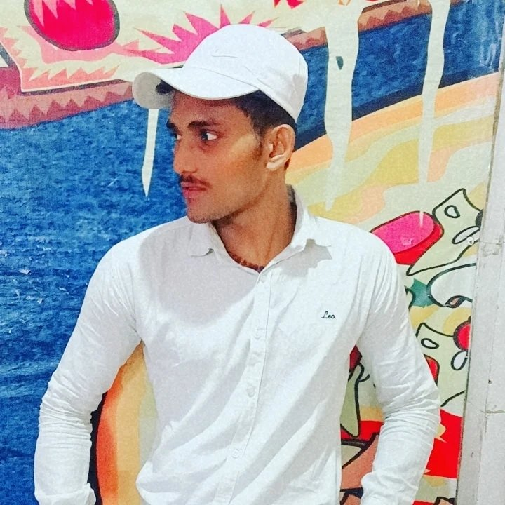
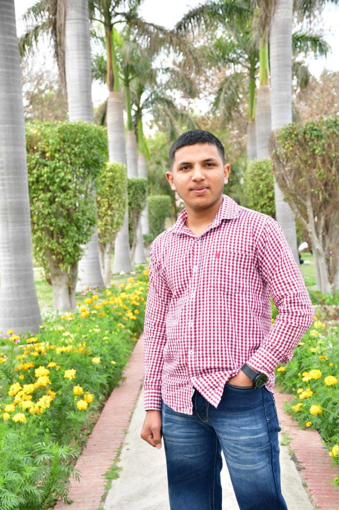
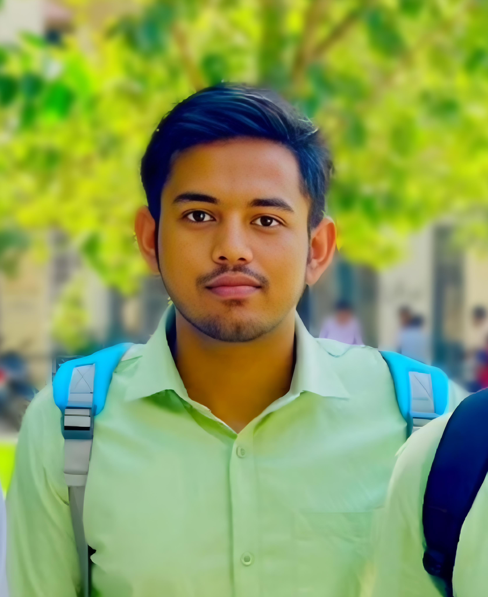
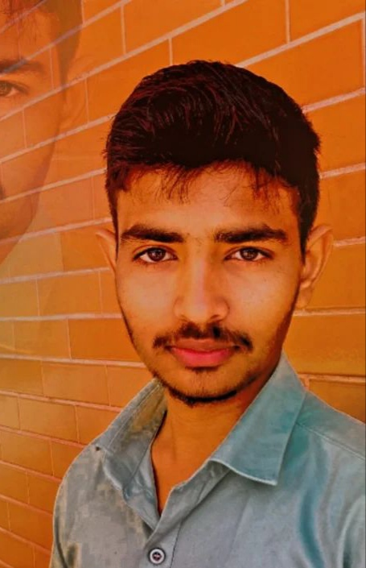

About Us
Our Mission
Our mission is to raise awareness about poverty and provide resources and support to those in need. We aim to educate the public about the causes and effects of poverty and to promote initiatives that help alleviate it.
Empower Individuals:
To empower the most vulnerable individuals in society by providing essential resources and support that enable them to improve their life circumstances.Advocacy and Awareness:
To serve as a leading voice advocating for the eradication of poverty and the implementation of comprehensive social policies that address the root causes of economic disparity.Education and Training:
To provide educational and skill-building programs that enhance employment opportunities for those at risk of poverty.Partnerships for Change:
To collaborate with local communities, governmental agencies, and other stakeholders to develop sustainable poverty alleviation strategies.Healthcare Access:
To ensure that healthcare becomes a reachable right for all, especially for those living in poverty, reducing the health disparities they face.Economic Development Initiatives:
To initiate and support economic development programs that directly benefit the impoverished by creating job opportunities and fostering local entrepreneurship.
Our Vision
We envision a world where poverty is eradicated, and every individual has access to the basic necessities of life, including food, shelter, education, and healthcare. We strive to create a supportive community where people can come together to make a difference.
A World Without Poverty:
To envision a world where no individual has to live in poverty and everyone has access to the basic necessities of life.Equal Opportunities:
To create a society where equal opportunities for growth and prosperity are available to all, regardless of their socio-economic status.Empowered Communities:
To see communities thrive through the empowerment of their most vulnerable members, fostering a cycle of positive change and development.Holistic Support Systems:
To develop comprehensive support systems that address the economic, educational, and health needs of impoverished populations.Innovative Solutions:
To lead with innovative approaches that dismantle the barriers to economic and social progress faced by millions.Educational Excellence:
To build a future where education acts as a key tool in fighting poverty, accessible to everyone as a means to change their own lives.Health and Wellbeing for All:
To pursue a future where health disparities are eradicated, and all individuals can live healthier and more productive lives.
Our Team

Aman Jaspal
Leader

Kartik Saini
Member

Kamal Jaglan
Member

Manjeet Rajput
Member